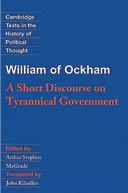
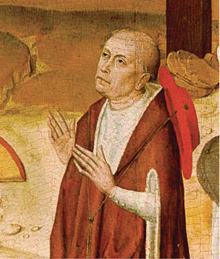

Bilimin Önlenemeyen Gerçekçiliği
Kutsal Roma Germen İmparatoru, Roma’nın üstüne yürüyüp Papa’nın koltuğuna sonradan Anti Papa diye anılacak bir rahibi oturturken, yanında İtalyan danışmanı Marsilio da Padova dışında bir de İngiliz danışmanı vardı: Ockhamlı William.
Kitaplarını herkes gibi Latince yazdığı ve zaten kıta Avrupası’nda uzunca süre kaldığı için Guillaume d’Ockham adıyla da tanınan bu bilgin; hem filozof ve mantıkçı hem de teolog olup tıpkı izinden gittiği Padova gibi bir Fransisken rahipti.
O da Konstantinopolis Kütüphanesi’nden talan edildikten sonra Avrupa’ya yayılan eski Yunan filozoflarının eserleriyle aydınlanmış; zaten aydınlandığı için Papa’nın hem devletler hem de Kiliseler üstündeki iktidar otoritesine (potestas) başkaldıran, kilisenin yoksulları sömürerek zenginleşmesine karşı çıkan Fransisken ulemanın yanında yer almıştı.
Üstelik diğerlerinden bir adım ileri gitmiş, İncil’in temel öğretisine değgin yaptığı mantık çıkarsamalarına dayanan çok sert metinlerle, Roma Kilisesi’nin tartışılmaz liderini “sahte Papa” ilan etmekten kaçınmamış, Papaların “ilahî emir” kabul edilen tartışılması yasak dogmalarının da uyduruk olduklarını ileri sürüyordu.
1300’lü yılların ilk yarısında, özellikle İngiliz ve Germen coğrafyasına hükmeden devletler ile Papalık makamı arasında başlayan amansız mücadelede, yoldaşlarıyla birlikte Ockham da aforozu yemişti tabii.
Yaşadığı çağda Nominalist34 ekolün en parlak temsilcisi sayılan Ockham, daha sonraki yüzyıllarda İngiliz ampirizminin35 öncüsü olarak anılmıştır.
Nominalist görüşten ampirik görüşe nasıl varıldığını kuşkusuz filozoflar daha iyi açıklar. Ama filozof rahip Ockhamlı William, çağımız bilimsel düşünce sistematiğini oluşturan “analitik” felsefe mantığının temel taş ustası sayılmaktadır.
İşte bu analize dayalı mantık süreci, Ockhamlı William’ı rahip olmasına karşın önüne kutsal diye konulan tüm dogmaları sorgulamasına ve Papalık makamının kurucu yasası, “Konstantin’in Bağışı” belgesinin de sahte olabileceğini düşünmesine yol açmıştır.
İngiliz din adamı Ockhamlı William, tüm kitapları gibi Latince yazdığı Breviloquium de protestate tyrannica (Zorba Hükümranlık Üzerine Kısa bir Söylev)36 adlı yapıtında, Büyük Konstantin’e atfedilen vasiyetin gerçekliğine ilişkin kuşkularını dile getirmiştir.
Bu kitabın, tarihin güzel Türkçemizde “keser döner sap döner, gün gelir hesap döner” deyişini haklı çıkarır nitelikte bir döngü izlediğini de fark etmişsinizdir:

Ockhamlı William’ın kitabı
Papaların fetvasıyla düzenlenen Haçlı Seferleri, Konstantinopolis ve Doğu Roma’dan çalınan kadim bilgi ve kültür birikimlerini Avrupa’ya taşıyarak, sonunda Papaları vuran düşünce akımlarını yaratmış, din dogmalarını bilimsel yaklaşım önünde savunmasız bırakmıştır.
Ortak dilin Latince oluşu Papalar tarafından sağlanmışken, farklı muhalif ve düşünürlerin Papalara karşı aynı dilde mücadele etmesini sağlamıştır.
15. yüzyıla gelindiğinde, Aydınlanmacı Fransisken rahipler ile din adamlarının alçakgönüllü olup “bir lokma, bir hırka” ile yetinmesi, tapınakların da gösterişsiz olması gerektiğini savunan diğer ruhban hizipleri, Papa’nın baş belasıydı.
Müminler yoksulluk içinde debelenirken, iman âlemine hükmeden günahkâr ve sefih Papaları şiddetle eleştiren bu hizipler, Katolik Kilisesi’nin dogmatik temellerini de tek tek oyuyor, bir yüzyıl sonra Reform diye adlandırılacak ve Hıristiyanlık âlemindeki ikinci büyük kırılmayı, Protestan mezhebini doğuracak depremi hazırlıyorlardı.
“Konstantin’in Bağışı” belgesinin sahteliğinin kanıtlarıyla ortaya dökülmesine çeyrek kala, tehlike çanı bizzat Papalık hükümetinin içinden çaldı.
Heidelberg ile Padova’da felsefe, hukuk, matematik eğitimi alan Alman düşünür ve din bilgini Kardinal Nicolaus Cusanus, 1433

Nicolaus Cusanus/Ressam: Albertus Magnus
yılında yazdığı De Concordantia Catholica adlı eserinde; Büyük Konstantin’in vasiyeti olduğu iddia edilen belgenin sahteliğini açıklamak cesaretini gösterdi. Bu cesaret kendisine hem ün kazandırdı hem de düşman. Ama Kilise’de reform yapılması gerektiğini düşünen ve “hümanist” Papa İkinci Pius tarafından Baş Naip atandı.
Papa İkinci Pius, “piskopos” ünvanına yükselttiği Nicolaus Cusanus’u kilise reformu için bir öneri dizini hazırlamakla görevlendirdi. Ne var ki bugün felsefi düşünce sistematiğinde Rönesans’ın habercisi kabul edilen “Hümanist” din bilgini ve dâhi matematikçi Cusanus, Kilise’yi reform çabalarında, bizzat Papalık hükümetinin (curia) şiddetli muhalefetiyle karşılaştı ve kısa süre sonra öldü.